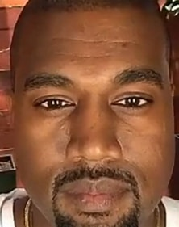
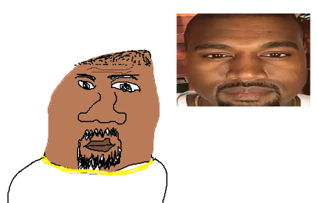

Kanye West jest moim najulubieńszym wykonawcą muzycznym.
Nie zgadzam sie z jego poglądami, lecz to nie zmienia faktu, iż tak kocham jego muzykę, jeśli Ye znalazłby się w jakimś niebezpieczeństwie ochroniłbym go swoim ciałem i duszą. Jego debiutancki album jest lepszy niż większość "magnum opus" innych twórców muzycznych. Nie mówiąc o jego następnym albumie - "Late Registration". Gdyby Kanye potrzebował obu nerek, aby przeżyć - oddałbym mu cztery. Gdyby ktoś skrytykował "Graduation" przy moim słodziaku, to bym go pobił, a potem oddał resztę swoich nerek i cewkę moczową Westowi. Gdybym spotkał Ye osobiście, ofiarowałbym mu swoją mamę, aby on nie był smutny (Umarła mu mama). Gdy włączam jego czwarty album studyjny pt. "Graduation" odczuwam emocje, których nigdy w innych sytuacjach nie czuję. Doznaję ostatecznej nirwany.
Muzyka Westa jest idealna do uczenia się, grania, medytowania. Słucham Kanye w drodze do szkoły oraz jak wracam ze szkoły. Najmocniejsze emocje wzbudza we mnie piosenka pt. "Lift Yourself". Muzyka mówi za siebie i się z tym w stuprocentach zgadzam. Wersy Ye są zarazem wzruszające i szczęśliwe. Aby zrozumieć to piękno zacytuję: "Poopy-di scoop, Scoop-diddy-whoop". Dalej nie dam rady cytować, ponieważ geniusz Westa mnie powstrzymuje. Za każdym razem, kiedy jest pogłoska o możliwym wydaniu nowego albumu najlepszego możliwego wykonawcy, to moje życie się zatrzymuje. Przestaję chodzić do szkoły, moje życie społecznie się zatrzymuje. W głebi serca wiem, że to nieprawda, lecz ja nie przestanę wierzyć.Jak Kanye West miałby miliard fanów, to ja byłbym jednym z nich. Gdyby miał milion, to ja nadal byłbym jednym z nich. Jeśli Kanye West miałby tysiąc fanów, to ja byłbym jednym z nich. Jeżeli Kanye miałby tysiąc fanów, to ja byłbym jednym z nich. Jeżeli jakimś cudem Kanye miałby sto albo dziesięć fanów, to ja byłbym jednym z nich. Gdyby West miałby jednego fana - to ja byłbym nim. Jeśli West miałby zero fanów(chociaż to niemożliwe), to ja byłbym martwy. Dlaczego? Ponieważ jestem jego największym fanem. Kocham go swoim całym sercem i duszą i tak będzie to końca mojego życia.
Jego najlepszym wydaniem jest piosenka "Runaway". Mówi ona o problemach Westa wraz ze wzrostem jego popularności. Paparazzi stalkujący jego życie, media przekształcające jego słowa, aby mieć własne korzyści. Ostatnia częsć piosenki wygląda tak, że można usłyszeć Westa śpiewającego, lecz z bardzo dużym przesterem. Symbolizuje to jak postrzegają go media - niewyraźnie oraz przekręcające jego słowa. Uważam to za bardzo piękną piosenkę oraz dochodzę do konkluzji, iż kocham Kanyego Westa.
